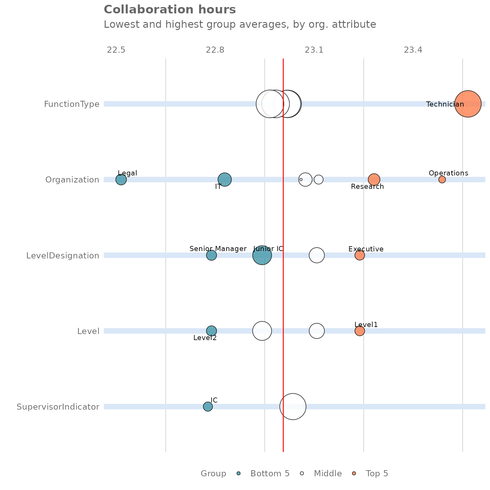

Identifying noteworthy groups with rank functions
Carlos Morales-Torrado
2025-06-16
Source:vignettes/exploratory-rank.Rmd
exploratory-rank.RmdIntroduction
This article introduces the rank functions that are included in the vivainsights R package. These are powerful functions that scan a full person query dataset and automatically identify noteworthy groups, i.e. those exhibiting the highest or lowest values for a metric in the population.
Rank functions can uncover previously unknown patterns and interesting trends, without analysts having to manually slice the data across multiple attributes. You can think of them as a tool for automatic group exploration - an efficient method for identifying the top and bottom group of employees without manually reviewing all the possible organisational divisions.
Additionally, these functions can reveal what combination of attributes best describe a group that shows a specific behaviour (i.e for example, what organisational attributes represent employees suffering from excessive workload, receiving insufficient coaching, etc). As business leaders often want to develop targeted interventions to address specific issues, these functions can be a great way to inform action planning and transformation initiatives.
This article is divided in four sections. After this introduction, section two describes rank functions and show how them can be used with person query outputs. In the following section, we explore their use for profiling - i.e. to identify in which groups a specific behaviour is most common. The fourth and final section includes a list of additional use cases that can benefit from this method.
Rank Functions
Baseline analysis
To get started, let’s open a new session in R and load the vivainsights R package. We will also use dplyr to facilitate data manipulation:
We will use the pq_data demo dataset, which contains a
weekly person query output, and apply the
collaboration_rank() function:
pq_data %>%
collaboration_rank(return = "table")
#> # A tibble: 22 × 4
#> hrvar group Collaboration_hours n
#> <chr> <chr> <dbl> <int>
#> 1 FunctionType Technician 23.6 274
#> 2 Organization Operations 23.5 22
#> 3 Organization Research 23.3 52
#> 4 Level Level1 23.2 37
#> 5 LevelDesignation Executive 23.2 37
#> 6 Organization HR 23.1 33
#> 7 Level Level3 23.1 87
#> 8 LevelDesignation Senior IC 23.1 87
#> 9 Organization Finance 23.1 68
#> 10 Organization Sales 23.1 13
#> # ℹ 12 more rowsThe output table contains the results from the automatic group
exploration. The rank function has taken all available organisational
attributes in this dataset (FunctionType,
Organization, LevelDesignation, and
IsActive) and calculated the average collaboration hours
for each group within each organisational attribute. The table shows the
analysed results for all groups, ranked from highest to lowest.
To view the entire table, we can add the function print
to the command above.
pq_data %>%
collaboration_rank(return = "table") %>%
print(n = 30)
#> # A tibble: 22 × 4
#> hrvar group Collaboration_hours n
#> <chr> <chr> <dbl> <int>
#> 1 FunctionType Technician 23.6 274
#> 2 Organization Operations 23.5 22
#> 3 Organization Research 23.3 52
#> 4 Level Level1 23.2 37
#> 5 LevelDesignation Executive 23.2 37
#> 6 Organization HR 23.1 33
#> 7 Level Level3 23.1 87
#> 8 LevelDesignation Senior IC 23.1 87
#> 9 Organization Finance 23.1 68
#> 10 Organization Sales 23.1 13
#> 11 SupervisorIndicator Manager 23.0 266
#> 12 FunctionType Advisor 23.0 293
#> 13 FunctionType Consultant 23.0 288
#> 14 FunctionType Specialist 23.0 300
#> 15 FunctionType Manager 23.0 300
#> 16 Level Level4 22.9 136
#> 17 LevelDesignation Junior IC 22.9 136
#> 18 Organization IT 22.8 68
#> 19 Level Level2 22.8 40
#> 20 LevelDesignation Senior Manager 22.8 40
#> 21 SupervisorIndicator IC 22.8 34
#> 22 Organization Legal 22.5 44This analysis shows us that the 82 employees labelled as
"FunctionType = "Sales" have the highest collaboration
hours, with a weekly average of 31 hours. In second place, there are 60
individuals in Organization = "Inventory Management" with
26.2 hours. On the lower end, the 75 employees labelled as
Organization = "Biz Dev" appear to have the lowest
collaboration time.
This output is useful to identify groups that are worth investigating
(e.g. employees labelled as "FunctionType = Sales"). It
also reveals that splits by FunctionType and
Organization are more interesting than those by
LevelDesignation, as they have more variation; all groups
in LevelDesignation have similar levels of collaboration,
between 18 and 22 hours a week. Rank functions can also display this
information in visual form. We can get that by changing the
return argument from "table" to
"plot":
pq_data %>%
collaboration_rank(return = "plot")
This plot contains the same information as the table above. Each row corresponds to a different organisational attribute and the bubbles show how the population is split across different subgroups, where bubble size is proportional to the number of individuals. The five groups in orange are clearly the ones spending most time in collaboration, with Sales being far ahead of the other groups. Keep in mind that each row of bubbles represents a different way to slice the same population, so groups across rows are not mutually exclusive.
Combining two HR variables
In our baseline analysis, we uncovered that the 82 employees labelled
as FunctionType = "Sales" have the highest average
collaboration hours. However, it is likely that some employees in this
group are more affected than others. Furthermore, there may be pockets
in other parts of this company that may be experiencing similar levels
of collaboration overload, but that are hidden given the structure of
the organisational data (for example, the managers within a particular
business unit).
The rank function includes an additional mode called “combine” that allows us to take our analysis one step further by performing on two HR variables the same analysis in a combinatorial manner:
pq_data %>%
collaboration_rank(return = "table", mode = "combine")
#> # A tibble: 308 × 4
#> hrvar group Collaboration_hours n
#> <chr> <chr> <dbl> <int>
#> 1 Combined [FunctionType] Technician [SupervisorIndi… 23.8 243
#> 2 Combined [FunctionType] Consultant [SupervisorIndi… 23.1 33
#> 3 Combined [FunctionType] Advisor [SupervisorIndicat… 23.1 260
#> 4 Combined [FunctionType] Manager [SupervisorIndicat… 23.0 266
#> 5 Combined [FunctionType] Consultant [SupervisorIndi… 23.0 255
#> 6 Combined [FunctionType] Specialist [SupervisorIndi… 23.0 266
#> 7 Combined [FunctionType] Specialist [SupervisorIndi… 22.8 34
#> 8 Combined [FunctionType] Advisor [SupervisorIndicat… 22.6 33
#> 9 Combined [FunctionType] Manager [SupervisorIndicat… 22.5 34
#> 10 Combined [FunctionType] Technician [SupervisorIndi… 21.7 31
#> # ℹ 298 more rowsThe output table contains similar results from the group exploration above, but with more granularity. The function has automatically created smaller groups by combining two distinct groups from the organisational attributes in scope. In this case, it seems that the 28 managers in Sales are the worst affected group, with a weekly average of 33.7 hours in collaboration per week - that sounds like a lot of meetings!
Additional functions
So far, we have limited our analysis to
collaboration_rank(), which only performs the analysis on
the metric Collaboration_hours. However, the vivainsights
R package includes many other rank functions for key Viva Insights
metrics:
afterhours_rank()- forAfter_hours_collaboration_hoursemail_rank()- forEmail_hoursmeeting_rank()- forMeeting_hoursone2one_rank()- forMeeting_hours_with_manager_1_on_1workloads_rank()- forCollaboration_span
Additionally, if you want to apply this to any other numeric variable
of your choice, you can use the more general version below by specifying
the metric as a string with the argument metric:
Using rank functions for profiling
In the previous section, we explored how rank functions can help analysts uncover interesting insights, without the need of manually slicing the data across multiple attributes.
Rank functions have an additional use: they can help us identify what combination of attributes best describe a group that shows a given behaviour. For example, we may be concerned about individuals that are experiencing both a heavy collaboration load (more than 20 hours a week on average) and long workweeks (workweek span of over 60 hours), and would like to know where in the organisations these individuals sit.
To answer that question, let’s create a new numeric custom metric
(i.e. a binary flag that is only either 1 or
0) and then apply the create_rank()
function:
pq_data %>%
mutate(At_risk = ifelse(Collaboration_hours > 20 & Collaboration_span > 60 , 1, 0)) %>%
create_rank(metric = "At_risk", mode = "combine")
#> # A tibble: 308 × 4
#> hrvar group At_risk n
#> <chr> <chr> <dbl> <int>
#> 1 Combined [FunctionType] Advisor [SupervisorIndicator] IC 0 33
#> 2 Combined [FunctionType] Advisor [SupervisorIndicator] Manager 0 260
#> 3 Combined [FunctionType] Consultant [SupervisorIndicator] IC 0 33
#> 4 Combined [FunctionType] Consultant [SupervisorIndicator] Manag… 0 255
#> 5 Combined [FunctionType] Manager [SupervisorIndicator] IC 0 34
#> 6 Combined [FunctionType] Manager [SupervisorIndicator] Manager 0 266
#> 7 Combined [FunctionType] Specialist [SupervisorIndicator] IC 0 34
#> 8 Combined [FunctionType] Specialist [SupervisorIndicator] Manag… 0 266
#> 9 Combined [FunctionType] Technician [SupervisorIndicator] IC 0 31
#> 10 Combined [FunctionType] Technician [SupervisorIndicator] Manag… 0 243
#> # ℹ 298 more rowsThe custom At_risk variable identifies whether any
particular person-week exhibits high collaboration hours and long
workweeks. By combining this with create_rank(), the
analysis reveals that the combination of heavy collaboration load plus
long workweeks is most prevalent among the 13 employees in
FunctionType = "Sales" and
LevelDesignation = "Junior IC". In other words, the average
employee of these groups experience high collaboration load and long
workweeks 31% of the time.
Conclusion, use cases and other applications
In this article, we have shown how rank functions can be a powerful tool to both uncover previously unknown patterns and to profile the groups that are experiencing a certain behaviour. In the context of Viva Insights, we see a wide range of applications in the areas of wellbeing, ways of working, and sales excellence. Examples include:
- Workload: Identifying groups with excessive collaboration and long workdays
- Freedom to disconnect: Identifying groups with always-on behaviours
- Coaching: Identifying groups with insufficient coaching and manager time
- Exposure: Identifying groups with insufficient skip-level exposure
- Isolation: Identifying groups with insufficient cross-team collaboration
- Sales performance: Identifying groups with insufficient external collaboration
Feedback
We hope you found this article useful!
If you have any suggestions or feedback, please submit an issue at https://github.com/microsoft/vivainsights/issues.